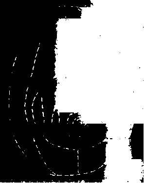

At any rate, you have one (or several). It’s not so much that it preexists or comes ready-made, although in certain respects it is preexistent. At any rate, you make one, you can’t desire without making one. And it awaits you; it is an inevitable exercise or experimentation, already accomplished the moment you undertake it, unaccomplished as long as you don’t. This is not reassuring, because you can botch it. Or it can be terrifying, and lead you to your death. It is nondesire as well as desire. It is not at all a notion or a concept but a practice, a set of practices. You never reach the Body without Organs, you can’t reach it, you are forever attaining it, it is a limit. People ask, So what is this BwO? — But you’re already on it, scurrying like a vermin, groping like a blind person, or running like a lunatic: desert traveler and nomad of the steppes. On it we sleep, live our waking lives, fight — fight and are fought — seek our place, experience untold happiness and fabulous defeats; on it we penetrate and are penetrated; on it we love. On November 28,1947, Artaud declares war on the organs: To be done with the judgment of God, “for you can tie me up if you wish, but there is nothing more useless than an organ.”1 Experimentation: not only radiophonic but also biological and political, incurring censorship and repression. Corpus and Socius, politics and experimentation. They will not let you experiment in peace.
The BwO: it is already under way the moment the body has had enough of organs and wants to slough them off, or loses them. A long procession. The hypochondriac body: the organs are destroyed, the damage has already been done, nothing happens anymore. “Miss X claims that she no longer has a brain or nerves or chest or stomach or guts. All she has left is the skin and bones of a disorganized body. These are her own words.”2 The paranoid body: the organs are continually under attack by outside forces, but are also restored by outside energies. (“He lived for a long time without a stomach, without intestines, almost without lungs, with a torn oesophagus, without a bladder, and with shattered ribs, he used sometimes to swallow part of his own larynx with his food, etc. But divine miracles (‘rays’) always restored what had been destroyed.”)3 The schizo body, waging its own active internal struggle against the organs, at the price of catatonia. Then the drugged body, the experimental schizo: “The human body is scandalously inefficient. Instead of a mouth and an anus to get out of order why not have one all-purpose hole to eat and eliminate? We could seal up nose and mouth, fill in the stomach, make an air hole direct into the lungs where it should have been in the first place.”4 The masochist body: it is poorly understood in terms of pain; it is fundamentally a question of the BwO. It has its sadist or whore sew it up; the eyes, anus, urethra, breasts, and nose are sewn shut. It has itself strung up to stop the organs from working; flayed, as if the organs clung to the skin; sodomized, smothered, to make sure everything is sealed tight.
Why such a dreary parade of sucked-dry, catatonicized, vitrified, sewn-up bodies, when the BwO is also full of gaiety, ecstasy, and dance? So why these examples, why must we start there? Emptied bodies instead of full ones. What happened? Were you cautious enough? Not wisdom, caution. In doses. As a rule immanent to experimentation: injections of caution. Many have been defeated in this battle. Is it really so sad and dangerous to be fed up with seeing with your eyes, breathing with your lungs, swallowing with your mouth, talking with your tongue, thinking with your brain, having an anus and larynx, head and legs? Why not walk on your head, sing with your sinuses, see through your skin, breathe with your belly: the simple Thing, the Entity, the full Body, the stationary Voyage, Anorexia, cutaneous Vision, Yoga, Krishna, Love, Experimentation. Where psychoanalysis says, “Stop, find your self again,” we should say instead, “Let’s go further still, we haven’t found our BwO yet, we haven’t sufficiently dismantled our self.” Substitute forgetting for anamnesis, experimentation for interpretation. Find your body without organs. Find out how to make it. It’s a question of life and death, youth and old age, sadness and joy. It is where everything is played out.
“Mistress, 1) You may tie me down on the table, ropes drawn tight, for ten to fifteen minutes, time enough to prepare the instruments; 2) One hundred lashes at least, a pause of several minutes; 3) You begin sewing, you sew up the hole in the glans; you sew the skin around the glans to the glans itself, preventing the top from tearing; you sew the scrotum to the skin of the thighs. You sew the breasts, securely attaching a button with four holes to each nipple. You may connect them with an elastic band with buttonholes — Now you go on to the second phase: 4) You can choose either to turn me over on the table so I am tied lying on my stomach, but with my legs together, or to bind me to the post with my wrists together, and my legs also, my whole body tightly bound; 5) You whip my back buttocks thighs, a hundred lashes at least; 6) You sew my buttocks together, all the way up and down the crack of my ass. Tightly, with a doubled thread, each stitch knotted. If I am on the table, now tie me to the post; 7) You give me fifty thrashes on the buttocks; 8) If you wish to intensify the torture and carry out your threat from last time, stick the pins all the way into my buttocks as far as they go; 9) Then you may tie me to the chair; you give me thirty thrashes on the breasts and stick in the smaller pins; if you wish, you may heat them red-hot beforehand, all or sorne. I should be tightly bound to the chair, hands behind my back so my chest sticks out. I haven’t mentioned burns, only because I have a medical exam coming up in awhile, and they take a long time to heal.” This is not a phantasy, it is a program: There is an essential difference between the psychoanalytic interpretation of the phantasy and the antipsychiatric experimentation of the program. Between the phantasy, an interpretation that must itself be interpreted, and the motor program of experimentation.5 The BwO is what remains when you take
everything away. What you take away is precisely the phantasy, and signifiances and subjectifications as a whole. Psychoanalysis does the opposite: it translates everything into phantasies, it converts everything into phantasy, it retains the phantasy. It royally botches the real, because it botches the BwO. Something will happen. Something is already happening. But what comes to pass on the BwO is not exactly the same as how you make yourself one. However, one is included in the other. Hence the two phases set forth in the preceding letter. Why two clearly distinguished phases, when the same thing is done in both cases — sewing and flogging? One phase is for the fabrication of the BwO, the other to make something circulate on it or pass across it; the same procedures are nevertheless used in both phases, but they must be done over, done twice. What is certain is that the masochist has made himself a BwO under such conditions that the BwO can no longer be populated by anything but intensities of pain, pain waves. It is false to say that the masochist is looking for pain but just as false to say that he is looking for pleasure in a particularly suspensive or roundabout way. The masochist is looking for a type of BwO that only pain can fill, or travel over, due to the very conditions under which that BwO was constituted. Pains are populations, packs, modes of king-masochist-in-the-desert that he engenders and augments. The same goes for the drugged body and intensities of cold, refrigerator waves. For each type of BwO, we must ask: (1) What type is it, how is it fabricated, by what procedures and means (predetermining what will come to pass)? (2) What are its modes, what comes to pass, and with what variants and what surprises, what is unexpected and what expected? In short, there is a very special relation of synthesis and analysis between a given type of BwO and what happens on it: an a priori synthesis by which something will necessarily be produced in a given mode (but what it will be is not known) and an infinite analysis by which what is produced on the BwO is already part of that body’s production, is already included in the body, is already on it (but at the price of an infinity of passages, divisions, and secondary productions). It is a very delicate experimentation since there must not be any stagnation of the modes or slippage in type: the masochist and the drug user court these ever-present dangers that empty their BwO’s instead of filling them.
You can fail twice, but it is the same failure, the same danger. Once at the level of the constitution of the BwO and again at the level of what passes or does not pass across it. You think you have made yourself a good BwO, that you chose the right Place, Power (Puissance), and Collectivity (there is always a collectivity, even when you are alone), and then nothing passes, nothing circulates, or something prevents things from moving. A paranoid point, a point of blockage, an outburst of delirium: it comes across clearly in Speed, by William Burroughs, Jr. Is it possible to locate this danger point, should the block be expelled, or should one instead “love, honor, and serve degeneracy wherever it surfaces”? To block, to be blocked, is that not still an intensity? In each case, we must define what comes to pass and what does not pass, what causes passage and prevents it. As in the meat circuit according to Lewin, something flows through channels whose sections are delimited by doors with gatekeepers, passers-on.6 Door openers and trap closers, Malabars and Fierabras. The body is now nothing more than a set of valves, locks, floodgates, bowls, or communicating vessels, each with a proper name: a peopling of the BwO, a Metropolis that has to be managed with a whip. What peoples it, what passes across it, what does the blocking?
A BwO is made in such a way that it can be occupied, populated only by intensities. Only intensities pass and circulate. Still, the BwO is not a scene, a place, or even a support upon which something comes to pass. It has nothing to do with phantasy, there is nothing to interpret. The BwO causes intensities to pass; it produces and distributes them in a spatium that is itself intensive, lacking extension. It is not space, nor is it in space; it is matter that occupies space to a given degree — to the degree corresponding to the intensities produced. It is nonstratified, unformed, intense matter, the matrix of intensity, intensity = 0; but there is nothing negative about that zero, there are no negative or opposite intensities. Matter equals energy. Production of the real as an intensive magnitude starting at zero. That is why we treat the BwO as the full egg before the extension of the organism and the organization of the organs, before the formation of the strata; as the intense egg defined by axes and vectors, gradients and thresholds, by dynamic tendencies involving energy transformation and kinematic movements involving group displacement, by migrations: all independent of accessory forms because the organs appear and function here only as pure intensities.7 The organ changes when it crosses a threshold, when it changes gradient. “No organ is constant as regards either function or position, … sex organs sprout anywhere,… rectums open, defecate and close,
… the entire organism changes color and consistency in split-second adjustments.”8 The tantric egg.
After all, is not Spinoza’s Ethics the great book of the BwO? The attributes are types or genuses of BwO’s, substances, powers, zero intensities as matrices of production. The modes are everything that comes to pass: waves and vibrations, migrations, thresholds and gradients, intensities produced in a given type of substance starting from a given matrix. The masochist body as an attribute or genus of substance, with its production of intensities and pain modes based on its degree 0 of being sewn up. The drugged body as a different attribute, with its production of specific intensities based on absolute Cold = 0. (“Junkies always beef about The Cold as they call it, turning up their black coat collars and clutching their withered necks … pure junk con. A junky does not want to be warm, he wants to be cool-cooler-coLD. But he wants The Cold like he wants His Junk — NOT OUTSIDE where it does him no good but INSIDE so he can sit around with a spine like a frozen hydraulic jack… his metabolism approaching Absolute Zero.”)9 Etc. The problem of whether there is a substance of all substances, a single substance for all attributes, becomes: Is there a totality of all BwO’sl If the BwO is already a limit, what must we say of the totality of all BwO’s? It is a problem not of the One and the Multiple but of a fusional multiplicity that effectively goes beyond any opposition between the one and the multiple. A formal multiplicity of substantial attributes that, as such, constitutes the ontological unity of substance. There is a continuum of all of the attributes or genuses of intensity under a single substance, and a continuum of the intensities of a certain genus under a single type or attribute. A continuum of all substances in intensity and of all intensities in substance. The uninterrupted continuum of the BwO. BwO, immanence, immanent limit. Drug users, masochists, schizophrenics, lovers — all BwO’s pay homage to Spinoza. The BwO is the field of immanence of desire, the plane of consistency specific to desire (with desire defined as a process of production without reference to any exterior agency, whether it be a lack that hollows it out or a pleasure that fills it).
Every time desire is betrayed, cursed, uprooted from its field of immanence, a priest is behind it. The priest cast the triple curse on desire: the negative law, the extrinsic rule, and the transcendent ideal. Facing north, the priest said, Desire is lack (how could it not lack what it desires?). The priest carried out the first sacrifice, named castration, and all the men and women of the north lined up behind him, crying in cadence, “Lack, lack, it’s the common law.” Then, facing south, the priest linked desire to pleasure. For there are hedonistic, even orgiastic, priests. Desire will be assuaged by pleasure; and not only will the pleasure obtained silence desire for a moment but the process of obtaining it is already a way of interrupting it, of instantly discharging it and unburdening oneself of it. Pleasure as discharge: the priest carries out the second sacrifice, named masturbation. Then, facing east, he exclaimed: Jouissance is impossible, but impossible jouissance is inscribed in desire. For that, in its very impossibility, is the Ideal, the “manque-a-jouir that is life.”10 The priest carried out the third sacrifice, phantasy or the thousand and one nights, the one hundred twenty days, while the men of the East chanted: Yes, we will be your phantasy, your ideal and impossibility, yours and also our own. The priest did not turn to the west. He knew that in the west lay a plane of consistency, but he thought that the way was blocked by the columns of Hercules, that it led nowhere and was uninhabited by people. But that is where desire was lurking, west was the shortest route east, as well as to the other directions, rediscovered or deterritorialized.
The most recent figure of the priest is the psychoanalyst, with his or her three principles: Pleasure, Death, and Reality. Doubtless, psychoanalysis demonstrated that desire is not subordinated to procreation, or even to genitality. That was its modernism. But it retained the essentials; it even found new ways of inscribing in desire the negative law of lack, the external rule of pleasure, and the transcendent ideal of phantasy. Take the interpretation of masochism: when the ridiculous death instinct is not invoked, it is claimed that the masochist, like everybody else, is after pleasure but can only get it through pain and phantasied humiliations whose function is to allay or ward off deep anxiety. This is inaccurate; the masochist’s suffering is the price he must pay, not to achieve pleasure, but to untie the pseudobond between desire and pleasure as an extrinsic measure. Pleasure is in no way something that can be attained only by a detour through suffering; it is something that must be delayed as long as possible because it interrupts the continuous process of positive desire. There is, in fact, a joy that is immanent to desire as though desire were filled by itself and its contemplations, a joy that implies no lack or impossibility and is not measured by pleasure since it is what distributes intensities of pleasure and prevents them from being suffused by anxiety, shame, and guilt. In short, the masochist uses suffering as a way of constituting a body without organs and bringing forth a plane of consistency of desire. That there are other ways, other procedures than masochism, and certainly better ones, is beside the point; it is enough that some find this procedure suitable for them.
Take a masochist who did not undergo psychoanalysis: “PROGRAM … At night, put on the bridle and attach my hands more tightly, either to the bit with the chain, or to the big belt right after returning from the bath. Put on the entire harness right away also, the reins and thumbscrews, and attach the thumbscrews to the harness. My penis should be in a metal sheath. Ride the reins for two hours during the day, and in the evening as the master wishes. Confinement for three or four days, hands still tied, the reins alternately tightened and loosened. The master will never approach her horse without the crop, and without using it. If the animal should display impatience or rebelliousness, the reins will be drawn tighter, the master will grab them and give the beast a good thrashing.”11 What is this masochist doing? He seems to be imitating a horse, Equus eroticus, but that’s not it. Nor are the horse and the master-trainer or mistress images of the mother or father. Something entirely different is going on: a becoming-animal essential to masochism. It is a question of forces. The masochist presents it this way: Training axiom — destroy the instinctive forces in order to replace them with transmitted forces. In fact, it is less a destruction than an exchange and circulation (“what happens to a horse can also happen to me”). Horses are trained: humans impose upon the horse’s instinctive forces transmitted forces that regulate the former, select, dominate, overcode them. The masochist effects an inversion of signs: the horse transmits its transmitted forces to him, so that the masochist’s innate forces will in turn be tamed. There are two series, the horse’s (innate force, force transmitted by the human being), and the masochist’s (force transmitted by the horse, innate force of the human being). One series explodes into the other, forms a circuit with it: an increase in power or a circuit of intensities. The “master,” or rather the mistress-rider, the equestrian, ensures the conversion of forces and the inversion of signs. The masochist constructs an entire assemblage that simultaneously draws and fills the field of immanence of desire; he constitutes a body without organs or plane of consistency using himself, the horse, and the mistress. “Results to be obtained: that I am kept in continual expectancy of actions and orders, and that little by little all opposition is replaced by a fusion of my person with yours. … Thus at the mere thought of your boots, without even acknowledging it, I must feel fear. In this way, it will no longer be women’s legs that have an effect on me, and if it pleases you to command me to receive your caresses, when you have had them and if you make me feel them, you will give me the imprint of your body as I have never had it before and never would have had it otherwise.”’2 Legs are still organs, but the boots now only determine a zone of intensity as an imprint or zone on a BwO.
Similarly, or actually in a different way, it would be an error to interpret courtly love in terms of a law of lack or an ideal of transcendence. The renunciation of external pleasure, or its delay, its infinite regress, testifies on the contrary to an achieved state in which desire no longer lacks anything but fills itself and constructs its own field of immanence. Pleasure is an affection of a person or a subject; it is the only way for persons to “find themselves” in the process of desire that exceeds them; pleasures, even the most artificial, are reterritorializations. But the question is precisely whether it is necessary to find oneself. Courtly love does not love the self, any more than it loves the whole universe in a celestial or religious way. It is a question of making a body without organs upon which intensities pass, self and other — not in the name of a higher level of generality or a broader extension, but by virtue of singularities that can no longer be said to be personal, and intensities that can no longer be said to be extensive. The field of immanence is not internal to the self, but neither does it come from an external self or a nonself. Rather, it is like the absolute Outside that knows no Selves because interior and exterior are equally a part of the immanence in which they have fused. “Joy” in courtly love, the exchange of hearts, the test or “assay”: everything is allowed, as long as it is not external to desire or transcendent to its plane, or else internal to persons. The slightest caress may be as strong as an orgasm; orgasm is a mere fact, a rather deplorable one, in relation to desire in pursuit of its principle. Everything is allowed: all that counts is for pleasure to be the flow of desire itself, Immanence, instead of a measure that interrupts it or delivers it to the three phantoms, namely, internal lack, higher transcendence, and apparent exteriority.13 If pleasure is not the norm of desire, it is not by virtue of a lack that is impossible to fill but, on the contrary, by virtue of its positivity, in other words, the plane of consistency it draws in the course of its process.
A great Japanese compilation of Chinese Taoist treatises was made in 982-984. We see in it the formation of a circuit of intensities between female and male energy, with the woman playing the role of the innate or instinctive force (Yin) stolen by or transmitted to the man in such a way that the transmitted force of the man (Yang) in turn becomes innate, all the more innate: an augmentation of powers.14 The condition for this circulation and multiplication is that the man not ejaculate. It is not a question of experiencing desire as an internal lack, nor of delaying pleasure in order to produce a kind of externalizable surplus value, but instead of constituting an intensive body without organs, Tao, a field of immanence in which desire lacks nothing and therefore cannot be linked to any external or transcendent criterion. It is true that the whole circuit can be channeled toward procreative ends (ejaculation when the energies are right); that is how Confucianism understood it. But this is true only for one side of the assemblage of desire, the side facing the strata, organisms, State, family… It is not true for the other side, the Tao side of destratification that draws a plane of consistency proper to desire. Is the Tao masochistic? Is courtly love Taoist? These questions are largely meaningless. The field of immanence or plane of consistency must be constructed. This can take place in very different social formations through very different assemblages (perverse, artistic, scientific, mystical, political) with different types of bodies without organs. It is constructed piece by piece, and the places, conditions, and techniques are irreducible to one another. The question, rather, is whether the pieces can fit together, and at what price. Inevitably, there will be monstrous crossbreeds. The plane of consistency would be the totality of all BwO’s, a pure multiplicity of immanence, one piece of which may be Chinese, another American, another medieval, another petty perverse, but all in a movement of generalized deterritorialization in which each person takes and makes what she or he can, according to tastes she or he will have succeeded in abstracting from a Self [Moi], according to a politics or strategy successfully abstracted from a given formation, according to a given procedure abstracted from its origin.
We distinguish between: (1) BwO’s, which are different types, genuses, or substantial attributes. For example, the Cold of the drugged BwO, the Pain of the masochist BwO. Each has its degree 0 as its principle of production (remissio). (2) What happens on each type of BwO, in other words, the modes, the intensities that are produced, the waves that pass (latitudo). (3) The potential totality of all BwO’s, the plane of consistency (Omnitudo, sometimes called the BwO). There are a number of questions. Not only how to make oneself a BwO, and how to produce the corresponding intensities without which it would remain empty (not exactly the same question). But also how to reach the plane of consistency. How to sew up, cool down, and tie together all the BwO’s. If this is possible to do, it is only by conjugating the intensities produced on each BwO, by producing a continuum of all intensive continuities. Are not assemblages necessary to fabricate each BwO, is not a great abstract Machine necessary to construct the plane of consistency? Gregory Bateson uses the term plateau for continuous regions of intensity constituted in such a way that they do not allow themselves to be interrupted by any external termination, any more than they allow themselves to build toward a climax; examples are certain sexual, or aggressive, processes in Balinese culture.15 A plateau is a piece of immanence. Every BwO is made up of plateaus. Every BwO is itself a plateau in communication with other plateaus on the plane of consistency. The BwO is a component of passage.
A rereading of H’eliogabale and Les Tarahumaras. For Heliogabalus is Spinoza, and Spinoza is Heliogabalus revived. And the Tarahumaras are experimentation, peyote. Spinoza, Heliogabalus, and experimentation have the same formula: anarchy and unity are one and the same thing, not the unity of the One, but a much stranger unity that applies only to the multiple.16 These two books by Artaud express the multiplicity of fusion, fusionability as infinite zero, the plane of consistency, Matter where no gods go; principles as forces, essences, substances, elements, remissions, productions; manners of being or modalities as produced intensities, vibrations, breaths, Numbers. Finally, the difficulty of reaching this world of crowned Anarchy if you go no farther than the organs (“the liver that turns the skin yellow, the brain wracked by syphilis, the intestines that expel filth”) and if you stay locked into the organism, or into a stratum that blocks the flows and anchors us in this, our world.
We come to the gradual realization that the BwO is not at all the opposite of the organs. The organs are not its enemies. The enemy is the organism. The BwO is opposed not to the organs but to that organization of the organs called the organism. It is true that Artaud wages a struggle against the organs, but at the same time what he is going after, what he has it in for, is the organism: The body is the body. Alone it stands. And in no need of organs. Organism it never is. Organisms are the enemies of the body.11 The BwO is not opposed to the organs; rather, the BwO and its “true organs,” which must be composed and positioned, are opposed to the organism, the organic organization of the organs. The judgment of God, the system of the judgment of God, the theological system, is precisely the operation of He who makes an organism, an organization of organs called the organism, because He cannot bear the BwO, because He pursues it and rips it apart so He can be first, and have the organism be first. The organism is already that, the judgment of God, from which medical doctors benefit and on which they base their power. The organism is not at all the body, the BwO; rather, it is a stratum on the BwO, in other words, a phenomenon of accumulation, coagulation, and sedimentation that, in order to extract useful labor from the BwO, imposes upon it forms, functions, bonds, dominant and hierarchized organizations, organized transcendences. The strata are bonds, pincers. “Tie me up if you wish.” We are continually stratified. But who is this we that is not me, for the subject no less than the organism belongs to and depends on a stratum? Now we have the answer: the BwO is that glacial reality where the alluvions, sedimentations, coagulations, foldings, and recoilings that compose an organism — and also a signification and a subject — occur. For the judgment of God weighs upon and is exercised against the BwO; it is the BwO that undergoes it. It is in the BwO that the organs enter into the relations of composition called the organism. The BwO howls: “They’ve made me an organism! They’ve wrongfully folded me! They’ve stolen my body!” The judgment of God uproots it from its immanence and makes it an organism, a signification, a subject. It is the BwO that is stratified. It swings between two poles, the surfaces of stratification into which it is recoiled, on which it submits to the judgment, and the plane of consistency in which it unfurls and opens to experimentation. If the BwO is a limit, if one is forever attaining it, it is because behind each stratum, encasted in it, there is always another stratum. For many a stratum, and not only an organism, is necessary to make the judgment of God. A perpetual and violent combat between the plane of consistency, which frees the BwO, cutting across and dismantling all of the strata, and the surfaces of stratification that block it or make it recoil.
Let us consider the three great strata concerning us, in other words, the ones that most directly bind us: the organism, signifiance, and subjectifi-cation. The surface of the organism, the angle of signifiance and interpretation, and the point of subjectification or subjection. You will be organized, you will be an organism, you will articulate your body — otherwise you’re just depraved. You will be signifier and signified, interpreter and interpreted — otherwise you’re just a deviant. You will be a subject, nailed down as one, a subject of the enunciation recoiled into a subject of the statement — otherwise you’re just a tramp. To the strata as a whole, the BwO opposes disarticulation (or n articulations) as the property of the plane of consistency, experimentation as the operation on that plane (no signifier, never interpret!), and nomadism as the movement (keep moving, even in place, never stop moving, motionless voyage, desubjectification). What does it mean to disarticulate, to cease to be an organism? How can we convey how easy it is, and the extent to which we do it every day? And how necessary caution is, the art of dosages, since overdose is a danger. You don’t do it with a sledgehammer, you use a very fine file. You invent self-destructions that have nothing to do with the death drive. Dismantling the organism has never meant killing yourself, but rather opening the body to connections that presuppose an entire assemblage, circuits, conjunctions, levels and thresholds, passages and distributions of intensity, and territories and deterritorializations measured with the craft of a surveyor. Actually, dismantling the organism is no more difficult than dismantling the other two strata, signifiance and subjectification. Signifiance clings to the soul just as the organism clings to the body, and it is not easy to get rid of either. And how can we unhook ourselves from the points of subjectification that secure us, nail us down to a dominant reality? Tearing the conscious away from the subject in order to make it a means of exploration, tearing the unconscious away from signifiance and interpretation in order to make it a veritable production: this is assuredly no more or less difficult than tearing the body away from the organism. Caution is the art common to all three; if in dismantling the organism there are times one courts death, in slipping away from signifiance and subjection one courts falsehood, illusion and hallucination and psychic death. Artaud weighs and measures every word: the conscious “knows what is good for it and what is of no value to it: it knows which thoughts and feelings it can receive without danger and with profit, and which are harmful to the exercise of its freedom. Above all, it knows just how far its own being goes, and just how far it has not yet gone or does not have the right to go without sinking into the unreal, the illusory, the unmade, the unprepared … a Plane which normal consciousness does not reach but which Ciguri allows us to reach, and which is the very mystery of all poetry. But there is in human existence another plane, obscure and formless, where consciousness has not entered, and which surrounds it like an unilluminated extension or a menace, as the case may be. And which itself gives off adventurous sensations, perceptions. These are those shameless fantasies which affect an unhealthy conscious. … I too have had false sensations and perceptions and I have believed in them.”18
You have to keep enough of the organism for it to reform each dawn; and you have to keep small supplies of signifiance and subjectification, if only to turn them against their own systems when the circumstances demand it, when things, persons, even situations, force you to; and you have to keep small rations of subjectivity in sufficient quantity to enable you to respond to the dominant reality. Mimic the strata. You don’t reach the BwO, and its plane of consistency, by wildly destratifying. That is why we encountered the paradox of those emptied and dreary bodies at the very beginning: they had emptied themselves of their organs instead of looking for the point at which they could patiently and momentarily dismantle the organization of the organs we call the organism. There are, in fact, several ways of botching the BwO: either one fails to produce it, or one produces it more or less, but nothing is produced on it, intensities do not pass or are blocked. This is because the BwO is always swinging between the surfaces that stratify it and the plane that sets it free. If you free it with too violent an action, if you blow apart the strata without taking precautions, then instead of drawing the plane you will be killed, plunged into a black hole, or even dragged toward catastrophe. Staying stratified — organized, signified, subjected — is not the worst that can happen; the worst that can happen is if you throw the strata into demented or suicidal collapse, which brings them back down on us heavier than ever. This is how it should be done: Lodge yourself on a stratum, experiment with the opportunities it offers, find an advantageous place on it, find potential movements of deterritorialization, possible lines of flight, experience them, produce flow conjunctions here and there, try out continuums of intensities segment by segment, have a small plot of new land at all times. It is through a meticulous relation with the strata that one succeeds in freeing lines of flight, causing conjugated flows to pass and escape and bringing forth continuous intensities for a BwO. Connect, conjugate, continue: a whole “diagram,” as opposed to still signifying and subjective programs. We are in a social formation; first see how it is stratified for us and in us and at the place where we are; then descend from the strata to the deeper assemblage within which we are held; gently tip the assemblage, making it pass over to the side of the plane of consistency. It is only there that the BwO reveals itself for what it is: connection of desires, conjunction of flows, continuum of intensities. You have constructed your own little machine, ready when needed to be plugged into other collective machines. Castaneda describes a long process of experimentation (it makes little difference whether it is with peyote or other things): let us recall for the moment how the Indian forces him first to find a “place,” already a difficult operation, then to find “allies,” and then gradually to give up interpretation, to construct flow by flow and segment by segment lines of experimentation, becoming-animal, becoming-molecular, etc. For the BwO is all of that: necessarily a Place, necessarily a Plane, necessarily a Collectivity (assembling elements, things, plants, animals, tools, people, powers, and fragments of all of these; for it is not “my” body without organs, instead the “me” (moi) is on it, or what remains of me, unalterable and changing in form, crossing thresholds).
In the course of Castaneda’s books, the reader may begin to doubt the existence of the Indian Don Juan, and many other things besides. But that has no importance. So much the better if the books are a syncretism rather than an ethnographical study, and the protocol of an experiment rather than an account of an initiation. The fourth book, Tales of Power, is about the living distinction between the “Tonal” and the “Nagual.” The tonal seems to cover many disparate things: It is the organism, and also all that is organized and organizing; but it is also signifiance, and all that is signifying or signified, all that is susceptible to interpretation, explanation, all that is memorizable in the form of something recalling something else; finally, it is the Self (Moi), the subject, the historical, social, or individual person, and the corresponding feelings. In short, the tonal is everything, including God, the judgment of God, since it “makes up the rules by which it apprehends the world. So, in a manner of speaking, it creates the world.”19 Yet the tonal is only an island. For the nagual is also everything. And it is the same everything, but under such conditions that the body without organs has replaced the organism and experimentation has replaced all interpretation, for which it no longer has any use. Flows of intensity, their fluids, their fibers, their continuums and conjunctions of affects, the wind, fine segmentation, microperceptions, have replaced the world of the subject. Becomings, becomings-animal, becomings-molecular, have replaced history, individual or general. In fact, the tonal is not as disparate as it seems: it includes all of the strata and everything that can be ascribed to the strata, the organization of the organism, the interpretations and explanations of the signifiable, the movements of subjectification. The nagual, on the contrary, dismantles the strata. It is no longer an organism that functions but a BwO that is constructed. No longer are there acts to explain, dreams or phantasies to interpret, childhood memories to recall, words to make signify; instead, there are colors and sounds, becomings and intensities (and when you become-dog, don’t ask if the dog you are playing with is a dream or a reality, if it is “your goddam mother” or something else entirely). There is no longer a Self [Moi] that feels, acts, and recalls; there is “a glowing fog, a dark yellow mist” that has affects and experiences movements, speeds.20 The important thing is not to dismantle the tonal by destroying it all of a sudden. You have to diminish it, shrink it, clean it, and that only at certain moments. You have to keep it in order to survive, to ward off the assault of the nagual. For a nagual that erupts, that destroys the tonal, a body without organs that shatters all the strata, turns immediately into a body of nothingness, pure self-destruction whose only outcome is death: “The tonal must be protected at any cost.”21
We still have not answered the question of why there are so many dangers, and so many necessary precautions. It is not enough to set up an abstract opposition between the strata and the BwO. For the BwO already exists in the strata as well as on the destratified plane of consistency, but in a totally different manner. Take the organism as a stratum: there is indeed a BwO that opposes the organization of the organs we call the organism, but there is also a BwO of the organism that belongs to that stratum. Cancerous tissue: each instant, each second, a cell becomes cancerous, mad, proliferates and loses its configuration, takes over everything; the organism must resubmit it to its rule or restratify it, not only for its own survival, but also to make possible an escape from the organism, the fabrication of the “other” BwO on the plane of consistency. Take the stratum of signifiance: once again, there is a cancerous tissue, this time of signifiance, a burgeoning body of the despot that blocks any circulation of signs, as well as preventing the birth of the asignifying sign on the “other” BwO. Or take a stifling body of subjectification, which makes a freeing all the more unlikely by forbidding any remaining distinction between subjects. Even if we consider given social formations, or a given stratic apparatus within a formation, we must say that every one of them has a BwO ready to gnaw, proliferate, cover, and invade the entire social field, entering into relations of violence and rivalry as well as alliance and complicity. A BwO of money (inflation), but also a BwO of the State, army, factory, city, Party, etc. If the strata are an affair of coagulation and sedimentation, all a stratum needs is a high sedimentation rate for it to lose its configuration and articulations, and to form its own specific kind of tumor, within itself or in a given formation or apparatus. The strata spawn their own BwO’s, totalitarian and fascist BwO’s, terrifying caricatures of the plane of consistency. It is not enough to make a distinction between full BwO’s on the plane of consistency and empty BwO’s on the debris of strata destroyed by a too-violent destratification. We must also take into account cancerous BwO’s in a stratum that has begun to proliferate. The three-body problem. Artaud said that outside the “plane” is another plane surrounding us with “an unillu-minated extension or a menace, as the case may be.” It is a struggle and as such is never sufficiently clear. How can we fabricate a BwO for ourselves without its being the cancerous BwO of a fascist inside us, or the empty BwO of a drug addict, paranoiac, or hypochondriac? How can we tell the three Bodies apart? Artaud was constantly grappling with this problem. The extraordinary composition of To Be Done with the Judgment of God: he begins by cursing the cancerous body of America, the body of war and money; he denounces the strata, which he calls “caca”; to the strata he opposes the true Plane, even if it is only peyote, the little trickle of the Tarahumaras; but he also knows about the dangers of a too-sudden, careless destratification. Artaud was constantly grappling with all of that, and flowed with it. Letter to Hitler: “Dear Sir, In 1932 in the Ider Cafe in Berlin, on one of the evenings when I made your acquaintance and shortly before you took power, I showed you roadblocks on a map that was not just a map of geography, roadblocks against me, an act of force aimed in a certain number of directions you indicated to me. Today Hitler I lift the roadblocks I set down! The Parisians need gas. Yours, A.A. — P.S. Be it understood, dear sir, that this is hardly an invitation, it is above all a warning.”22 That map that is not only a map of geography is something like a BwO intensity map, where the roadblocks designate thresholds and the gas, waves or flows. Even if Artaud did not succeed for himself, it is certain that through him something has succeeded for us all.
The BwO is the egg. But the egg is not regressive; on the contrary, it is perfectly contemporary, you always carry it with you as your own milieu of experimentation, your associated milieu. The egg is the milieu of pure intensity, spatium not extension, Zero intensity as principle of production. There is a fundamental convergence between science and myth, embryology and mythology, the biological egg and the psychic or cosmic egg: the egg always designates this intensive reality, which is not undifferentiated, but is where things and organs are distinguished solely by gradients, migrations, zones of proximity. The egg is the BwO. The BwO is not “before” the organism; it is adjacent to it and is continually in the process of constructing itself. If it is tied to childhood, it is not in the sense that the adult regresses to the child and the child to the Mother, but in the sense that the child, like the Dogon twin who takes a piece of the placenta with him, tears from the organic form of the Mother an intense and destratified matter that on the contrary constitutes his or her perpetual break with the past, his or her present experience, experimentation. The BwO is a childhood block, a becoming, the opposite of a childhood memory. It is not the child “before” the adult, or the mother “before” the child: it is the strict contemporaneousness of the adult, of the adult and the child, their map of comparative densities and intensities, and all of the variations on that map. The BwO is precisely this intense germen where there are not and cannot be either parents or children (organic representation). This is what Freud failed to understand about Weissmann: the child as the germinal contemporary of its parents. Thus the BwO is never yours or mine. It is always a body. It is no more projective than it is regressive. It is an involution, but always a contemporary, creative involution. The organs distribute themselves on the BwO, but they distribute themselves independently of the form of the organism; forms become contingent, organs are no longer anything more than intensities that are produced, flows, thresholds, and gradients. “A” stomach, “an” eye, “a” mouth: the indefinite article does not lack anything; it is not indeterminate or undifferentiated, but expresses the pure determination of intensity, intensive difference. The indefinite article is the conductor of desire. It is not at all a question of a fragmented, splintered body, of organs without the body (OwB). The BwO is exactly the opposite. There are not organs in the sense of fragments in relation to a lost unity, nor is there a return to the undifferentiated in relation to a differen-tiable totality. There is a distribution of intensive principles of organs, with their positive indefinite articles, within a collectivity or multiplicity, inside an assemblage, and according to machinic connections operating on a BwO. Logos spermaticos. The error of psychoanalysis was to understand BwO phenomena as regressions, projections, phantasies, in terms of an image of the body. As a result, it only grasps the flipside of the BwO and immediately substitutes family photos, childhood memories, and part-objects for a worldwide intensity map. It understands nothing about the egg nor about indefinite articles nor about the contemporaneousness of a continually self-constructing milieu.
The BwO is desire; it is that which one desires and by which one desires. And not only because it is the plane of consistency or the field of immanence of desire. Even when it falls into the void of too-sudden destra-tification, or into the proliferation of a cancerous stratum, it is still desire. Desire stretches that far: desiring one’s own annihilation, or desiring the power to annihilate. Money, army, police, and State desire, fascist desire, even fascism is desire. There is desire whenever there is the constitution of a BwO under one relation or another. It is a problem not of ideology but of pure matter, a phenomenon of physical, biological, psychic, social, or cosmic matter. That is why the material problem confronting schizoanalysis is knowing whether we have it within our means to make the selection, to distinguish the BwO from its doubles: empty vitreous bodies, cancerous bodies, totalitarian and fascist. The test of desire: not denouncing false desires, but distinguishing within desire between that which pertains to stratic proliferation, or else too-violent destratification, and that which pertains to the construction of the plane of consistency (keep an eye out for all that is fascist, even inside us, and also for the suicidal and the demented). The plane of consistency is not simply that which is constituted by the sum of all BwO’s. There are things it rejects; the BwO chooses, as a function of the abstract machine that draws it. Even within a BwO (the masochist body, the drugged body, etc.), we must distinguish what can be composed on the plane and what cannot. There is a fascist use of drugs, or a suicidal use, but is there also a possible use that would be in conformity with the plane of consistency? Even paranoia: Is there a possibility of using it that way in part? When we asked the question of the totality of all BwO’s, considered as substantial attributes of a single substance, it should have been understood, strictly speaking, to apply only to the plane. The plane is the totality of the full BwO’s that have been selected (there is no positive totality including the cancerous or empty bodies). What is the nature of this totality? Is it solely logical? Or must we say that each BwO, from a basis in its own genus, produces effects identical or analogous to the effects other BwO’s produce from a basis in their genera? Could what the drug user or masochist obtains also be obtained in a different fashion in the conditions of the plane, so it would even be possible to use drugs without using drugs, to get soused on pure water, as in Henry Miller’s experimentations? Or is it a question of a real passage of substances, an intensive continuum of all the BwO’s? Doubtless, anything is possible. All we are saying is that the identity of effects, the continuity of genera, the totality of all BwO’s, can be obtained on the plane of consistency only by means of an abstract machine capable of covering and even creating it, by assemblages capable of plugging into desire, of effectively taking charge of desires, of assuring their continuous connections and transversal tie-ins. Otherwise, the BwO’s of the plane will remain separated by genus, marginalized, reduced to means of bordering, while on the “other plane” the emptied or cancerous doubles will triumph.